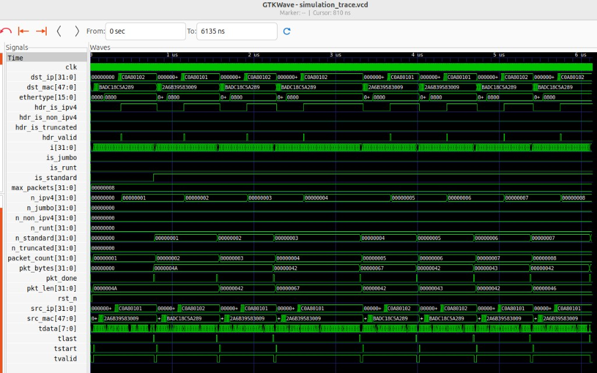

DPI-C + libpcap
Offline replay with wire length, timestamps, and DLT. FILTER= compiles BPF and reports match versus skip counts.
Open-source verification
Stream a captured .pcap
into Verilator through DPI-C. Hardware under test sees the same Ethernet frames a NIC would,
on an AXI-Stream bus, with simulation time frozen for debug.
Use it when an FPGA or ASIC packet pipeline needs real traffic before a live port exists. Classification, DPI, RoCE-aware paths, and RSS can be gated on traces you already captured.
Offline replay with wire length, timestamps, and DLT. FILTER= compiles BPF and reports match versus skip counts.
tdata, tkeep, tvalid, tready, tstart, tlast. Default 8 bits per cycle; AXIS_W=64 packs eight bytes. BP=1 or random BP=2.
RSS Toeplitz hash on tuser and IPv4 header checksum are computed in C and checked in SystemVerilog. Gate mis=0.
Handshake HS_DONE, then payload length from IHL and data offset. SYN/FIN consume one. In-order data is SEQ_OK.
UDP/4791 BTH, PSN tracker, and ICRC on the last four bytes of a complete frame. Truncated captures are skipped, not failed.
EtherType 0x0806 is classified as ARP. UDP dest 4789 walks the overlay to the inner Ethernet type and VNI.
DUMP=replay.pcap writes accepted beats through pcap_dump. Replaying that file must match the original DUT summary. Wireshark still opens it as Ethernet.
End-of-run [COV] bins: size class, TCP SYN/ACK/FIN/RST, RoCE send vs ACK. Verilator 5.032 cannot compile covergroup.
Sources sit under hdl/ and dpi/. Traces stay on the machine that runs the sim (gitignored).
Each HDL block is isolated. Runtime knobs are plusargs; changing PCAP or MAX_PACKETS does not rebuild. Changing AXIS_W does.
| Module | Role |
|---|---|
| pkt_size_filter | Runt (<64) / standard / jumbo (>1500) from tkeep popcount |
| pkt_header_parser | MAC, EtherType, IPv4 TTL/iplen, L4 ports, TCP flags/seq, RoCE BTH, ARP, VXLAN VNI |
| pkt_tcp_tracker | 4-tuple CAM: SYN / SYN-ACK / HS_DONE / next-seq (plen) / FIN / RST |
| pkt_roce_tracker | PSN per {src,dst,qp}, MSG_DONE, reverse ACK_OK, next-message PSN_GAP |
| pkt_roce_icrc | Seed 0xdebb20e3, masked CRC32 vs last 4 bytes; truncated frames skipped |
| pkt_rss | 40-byte Microsoft/Intel key; 4-tuple TCP/UDP or 2-tuple IPs; qid = hash % 4 |
| pkt_ip_csum | RFC 1071 fold of the IHL words; compared with DPI-C (CSUM mis=0) |
| Plusarg / make | Meaning |
|---|---|
| PCAP= | Capture file (default traffic.pcap) |
| MAX_PACKETS= | Stream cap (default 100). BPF counts matches, not file order |
| FILTER= | libpcap expression; pcap_offline_filter so skip is counted |
| DUMP= | Write accepted AXI-Stream bytes back to a pcap (same DLT) |
| BP=1 / BP=2 | 50% tready, or $urandom stalls |
| PACE=1 | IFG from pcap timestamps, capped by PACE_MAX_US (default 100) |
| AXIS_W=8|64 | Bits on tdata; 64 uses tkeep lanes |

DUMP=replay.pcap as Ethernet in Wireshark.
hdr_is_roce, dest port 0x12b7. Run make wave.These summaries are what a green run looks like. Compact handshake logs live under examples/ with MAX_PACKETS=8.
| Command | Expect |
|---|---|
| make MAX_PACKETS=8 | ipv4=8 tcp=8 hs=1 seq_ok=5 seq_err=0, RSS and CSUM mis=0 |
| make FILTER='tcp port 5201' | BPF matched=100 skipped=0 (1000-pkt TCP file, cap 100) |
| make FILTER='udp' | streamed 0, skipped=1000 on a TCP-only capture |
| make PCAP=soft_roce.pcap MAX_PACKETS=8 | roce=8 msg=1 ack=1 icrc ok=8 |
| make PCAP=soft_roce.pcap MAX_PACKETS=16 | msg=3 ack=3, next Send continues PSN |
| python3 scripts/gen_pcap.py ci.pcap && make PCAP=ci.pcap BP=2 | arp=1 vxlan=1 CSUM mis=0, streamed 4 |
Ubuntu is the reference environment. Install Verilator 5.032 or later and libpcap-dev. GTKWave is optional (make wave). Soft-RoCE capture additionally needs rdma-core, ibverbs-utils, and tcpdump (docs/soft_roce_veth.md).
sudo apt install build-essential libpcap-dev git clone https://github.com/khademullah/Pcap2HDL.git cd Pcap2HDL make MAX_PACKETS=8
python3 scripts/gen_pcap.py ci.pcap make PCAP=ci.pcap MAX_PACKETS=8 BP=2 make FILTER='tcp port 5201' make FILTER='udp'
make PCAP=soft_roce.pcap MAX_PACKETS=8 make PCAP=soft_roce.pcap MAX_PACKETS=16 make DUMP=replay.pcap make AXIS_W=64 PCAP=soft_roce.pcap
traffic.pcap and soft_roce.pcap are local (gitignored). Default cap is 100 packets.
tuser carries the RSS hash; tuser_err is checksum-fail sideband and does not overwrite the hash.
Aimed at digital design, verification, and network-hardware engineers. Clocked handshakes and L2–L4 still matter.
Keep isolation: a change in pkt_rss.sv should not require editing the RoCE tracker.
pkt_header_parser.sv, keep IPv4/RoCE gates green.pcap filesStretch items already landed: IPv4 checksum scoreboard, ARP/VXLAN, random BP=2, scripts/gen_pcap.py, GitHub Actions.